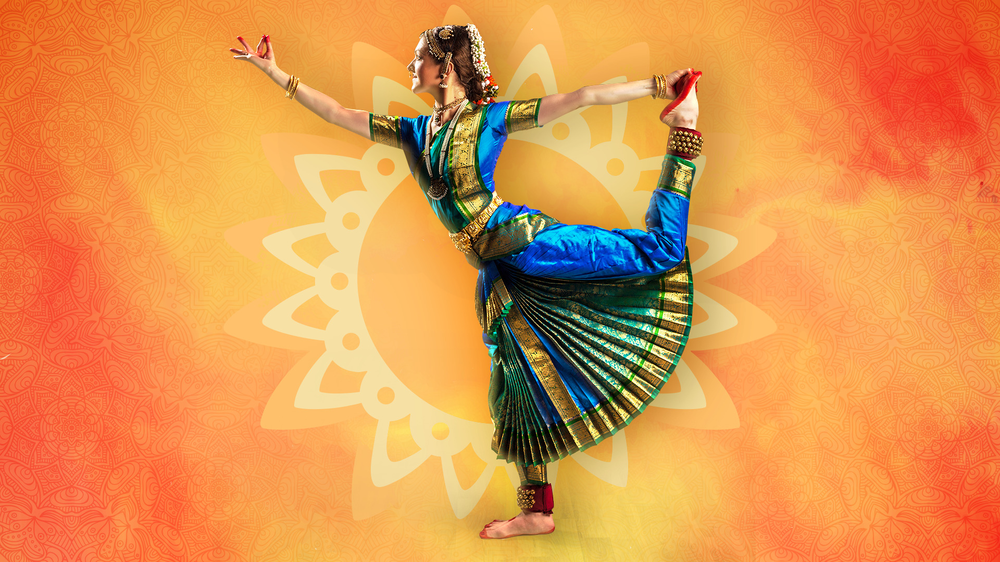

Vilasini Natyam is one of the oldest classical dance forms of India, originating from the state of Andhra Pradesh. It has a rich history, traditionally performed in temples and courts, and is closely linked to devotional and storytelling practices
garba music is lively and energetic. The main instruments used are:
Vilasini Natyam costume includes: Silk saree in temple-dancer style with pleats Fitted blouse (choli) Ghungroo (ankle bells) Temple jewelry – necklaces, earrings, bangles, waist belt, headpieces Decorated hair with flowers/jewelry Makeup to highlight expressions (eyes, lips, bindi)
Vilasini Natyam is performed in temples, during festivals, and on cultural stages, mainly to depict stories from Hindu epics.